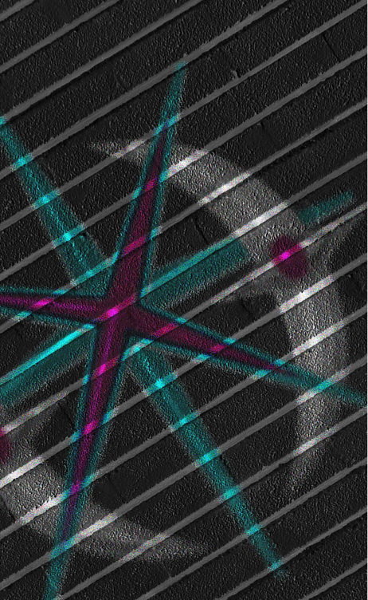

It's been five months.
It's been five months since I was able to write anything, five months of silence from Corina, five months since she has had access to the broadcast systems, five months since I have had true hope.
I was more mentally underprepared for this than I thought.
—-
We weren't the uprising. I learned this slowly. I had started to go back to work after the new year, after everything happened. I've been able to piece together the full story from the bits and pieces of information I hear from those around me. I hear whispered conversations in the ministry bathrooms, mostly Daria's neurotic self, she has trouble keeping quiet, which is good for me.
It wasn't us who launched the attack, it was others, miners from Sector 4, their lungs already crystallizing, they had nothing to lose. They saw Corina's video, saw their own faces, their own children being lied to, and most importantly, saw that the freeze was not an accident but rather a contract.
They didn't have a network, they didn't have a plan, but they did have anger.
They first began by destroying much of the petrol crystal processing labs. A group of 50 was able to get inside and began to use all of their force to destroy the production. They did not care what was going to happen to them at this point. 10 men held the doors shut, but there was no point.
The response was enacted only 5 minutes into them getting inside the building. All 50 were executed on-site. No trial, no announcement, their bodies carried away, and not even allowed a proper funeral or goodbye from their families.
I didn't know them, and I had never really met them, but all I could do was mourn.
I feel like the blood is on my hands, it's still warm.
—-
The aftermath hasn't been easy.
Security has tripled. Overnight, every Ministry entrance sprouted with a biometric scanner that doesn't just scan your face to the database but also checks your stress markers. Pupil dilation, micro expressions, any drop of sweat, any of these can be signs that you are hiding something.
Everyone at the Ministry of Data has been taken into small, windowless rooms to be questioned.
"Do you support the regime of the first director?"
"Yes"
"Are you currently in contact with any individuals involved in anti-state activities?"
"No"
"Do you know anything about the broadcast systems issues?"
"No"
I passed with flying colors, my father's teaching continues to help.
Daria, however, nearly failed her first exam. She had pure terror radiating from every pore in her body. She came to work the day after with dark circles, she must have thought they were coming for her next, poor girl.
—-
Viktor walks me to work every morning now.
At first, I thought he was put up to it by the government, making sure to keep an eye on all of my actions. The more he walks me, however, the more I can tell that he is scared of something. He holds my hand together when we pass the security checkpoints. His jaw clenches when the biometric scanner lingers on my face for too long. He kisses me on the head and always says, "I'll be here at 6. Don't wait outside."
He doesn't want me to stand alone in a crowd of strangers any longer. I don't know why he's doing all of this. I just know he gives it and I will take it.
—-
Tonight, Viktor walked me home through the old transit tunnel. It's not the most direct route back home, but it is at least away from most of the crowds. He led me down a side street that I barely recognized and a set of concrete stairs I had never seen before. I know where this is based on the archive maps, but I've always thought it was boarded up by now.
I saw a bunch of graffiti on the walls. Viktor squeezed my hand tighter and said, "I thought you might want to see this". He gestured to a corner on one of the walls.
A metal panel with an unfinished sun. It was our symbol, with a date, from five months ago.
My heart stopped. I knew it was Corinas, but I would have never found it if it wasn't for Viktor.
"I walk here sometimes, to see if there's anything new."
—
I don't remember saying anything to him before leaving the tunnel and making our way home. I only remember that I couldn't stop looking at him while he simply kept moving forward. When we got home, nothing changed, the way he looked at me stayed the same. He had a face without judgment and without anger. He waited for her message for me.
He knows, and deep down, he might have always known. But he hasn't reported me, and I don't think he will.
He knows, and he's still with me.


what do i even do after this
A long way
10 - 05 - 11 P.F
39204957319